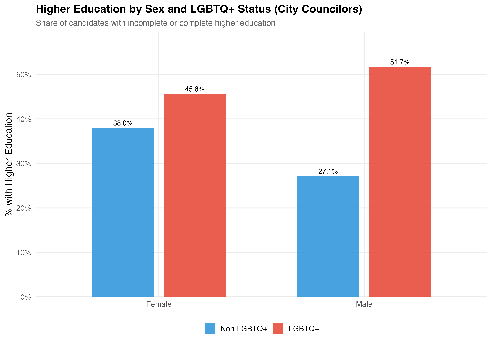
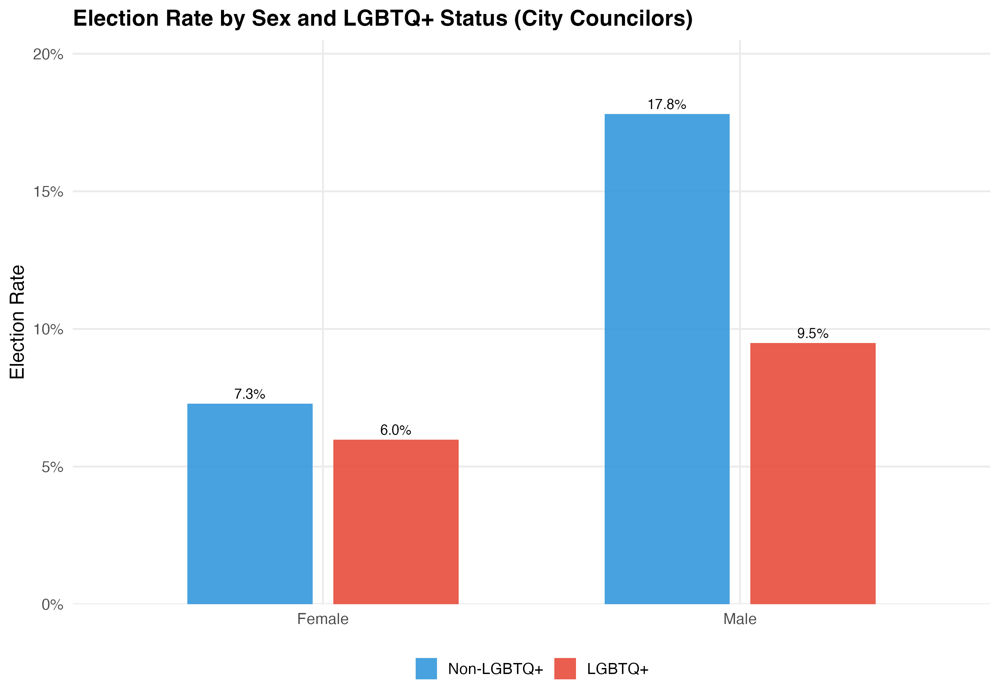
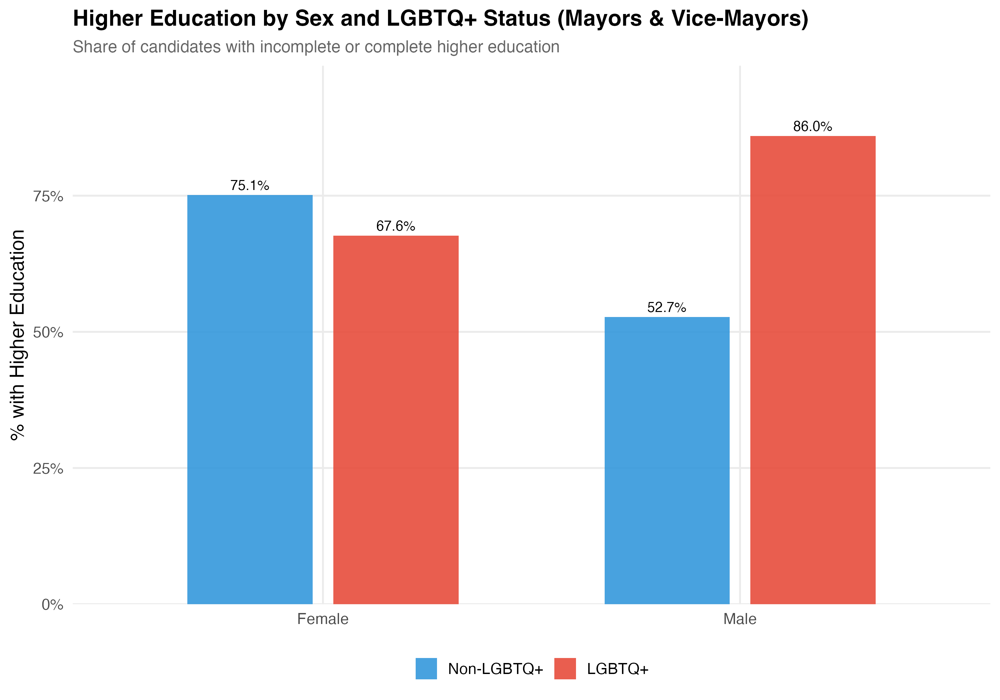
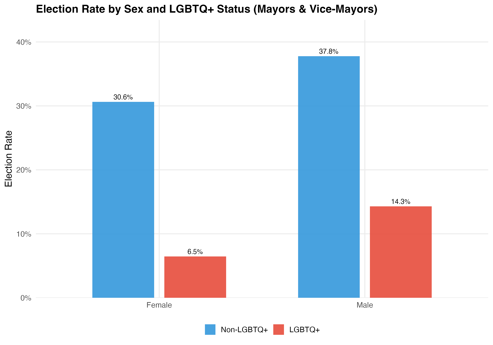
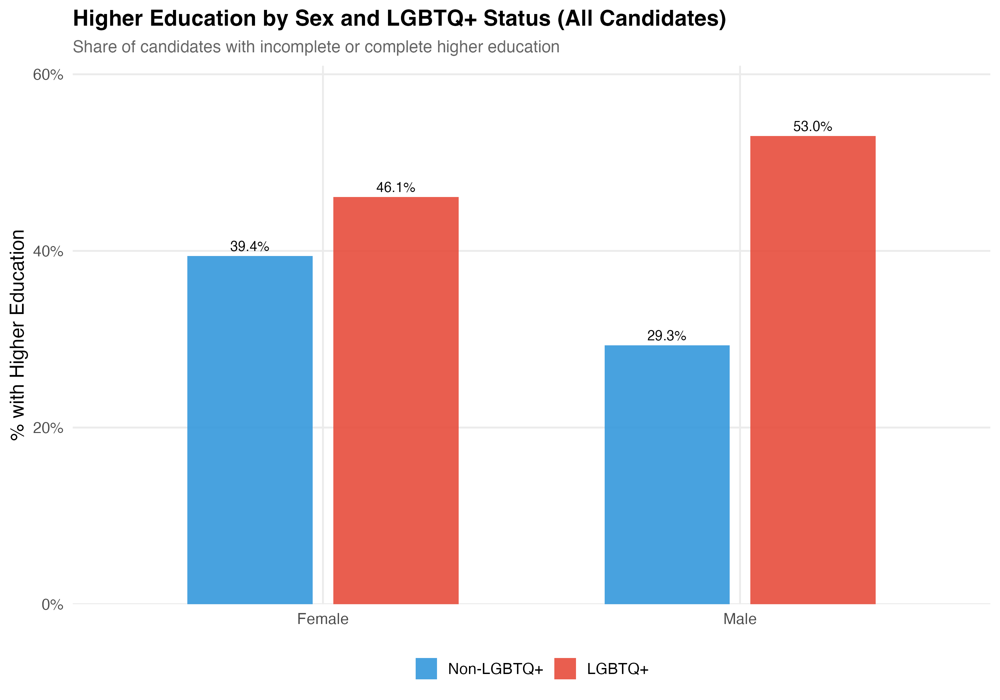
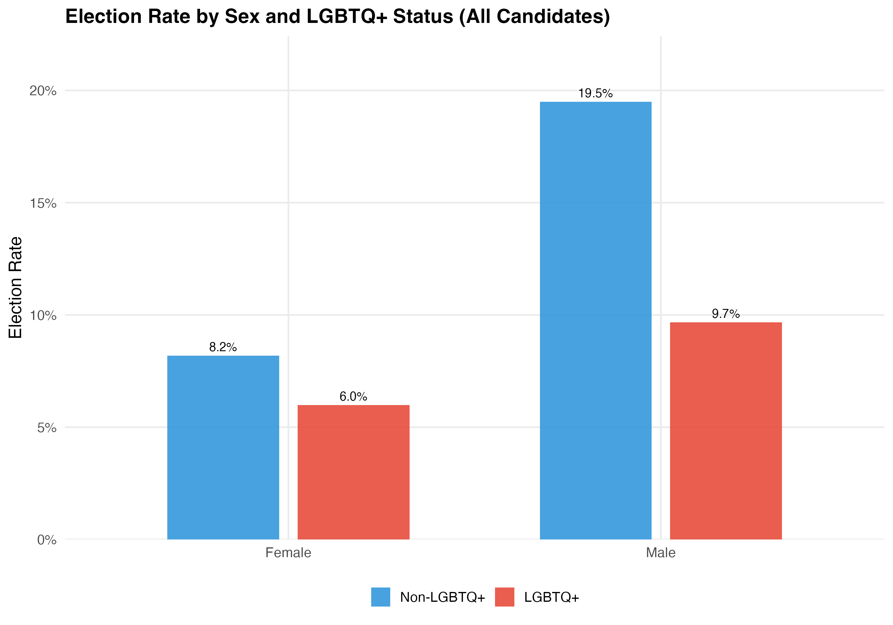

Show code
source(file.path(rprojroot::find_root(rprojroot::has_file(".here")), "code", "00_setup.R"))
df <- readRDS(paths$analysis_full_rds)
df <- df %>%
mutate(ideology_category = factor(ideology_category, levels = ideology_levels))How Do LGBTQ+ Candidates Differ from the Average?
source(file.path(rprojroot::find_root(rprojroot::has_file(".here")), "code", "00_setup.R"))
df <- readRDS(paths$analysis_full_rds)
df <- df %>%
mutate(ideology_category = factor(ideology_category, levels = ideology_levels))The previous chapter established who runs for municipal office in Brazil. This chapter asks the central comparative question: How do LGBTQ+ candidates differ from their non-LGBTQ+ counterparts?
We compare the two groups across demographics (age, gender, race, education), political positioning (ideology, party, position), and electoral outcomes. Every comparison shown here treats the non-LGBTQ+ population as the baseline and highlights where LGBTQ+ candidates diverge — and by how much.
The dataset contains 463,601 candidates, of whom 3,134 (0.7%) are identified as LGBTQ+.
Analyses in this chapter are presented separately for city councilors (proportional representation) and mayors/vice-mayors (plurality/majority) using tabbed panels. City councilors constitute 93% of all candidates and are shown in the default tab. The “All Candidates” tab pools across positions for reference. This disaggregation matters because the two electoral systems have fundamentally different competitive dynamics.
LGBTQ+ candidates in this dataset were identified through two complementary sources:
Some candidates appear in both sources, which strengthens confidence in their identification. Disclosure source indicates whether a candidate was identified via TSE self-declaration only, VOTE LGBT matching only, or both. The panels below show the distribution across these categories.
render_identification <- function(data, tab_name) {
lgbtq_pos <- data %>% filter(lgbtq_candidate)
pal_disclosure <- c("TSE" = "#3498DB", "VOTE" = "#E74C3C", "Both" = "#9B59B6")
# --- Disclosure Source ---
cat("### Disclosure Source\n\n")
lgbtq_pos %>%
count(disclosure_source, sort = TRUE) %>%
mutate(pct = format_pct(n / sum(n))) %>%
rename(`Disclosure Source` = disclosure_source, N = n, `%` = pct) %>%
cat_kable(align = c("l", "r", "r"))
p_disc <- lgbtq_pos %>%
count(disclosure_source) %>%
mutate(
pct = n / sum(n),
label = paste0(format_n(n), "\n(", format_pct(pct), ")")
) %>%
ggplot(aes(x = reorder(disclosure_source, n), y = n, fill = disclosure_source)) +
geom_col(alpha = 0.9, show.legend = FALSE, width = 0.6) +
geom_text(aes(label = label), hjust = -0.1, size = 4) +
coord_flip() +
scale_y_continuous(expand = expansion(mult = c(0, 0.25))) +
scale_fill_manual(values = pal_disclosure) +
labs(
x = NULL, y = "Number of Candidates",
title = paste0("Disclosure Source of LGBTQ+ Candidates (", tab_name, ")"),
subtitle = "TSE self-declaration vs. VOTE LGBT identification project"
)
cat_plot(p_disc, paste0("02-disclosure-source-", pos_suffix(tab_name)), height = 5)
cat("::: {.callout-note}\n")
cat("## Key Finding: Multiple Identification Pathways\n")
cat("The overlap between TSE self-declaration and VOTE LGBT identification validates the identification strategy. Candidates identified by both sources provide a high-confidence subset, while those identified by only one source remind us that no single method captures all LGBTQ+ candidates.\n")
cat(":::\n\n")
# --- Disclosure by Ideology ---
cat("### Disclosure by Ideology\n\n")
cat("Do different disclosure channels capture different types of LGBTQ+ candidates? The tables below cross-tabulate disclosure source with party ideology and geographic region to reveal whether TSE self-declaration and VOTE LGBT identification reach distinct populations.\n\n")
disc_ideo <- lgbtq_pos %>%
filter(!is.na(ideology_category), !is.na(disclosure_source)) %>%
count(disclosure_source, ideology_category) %>%
group_by(disclosure_source) %>%
mutate(pct = round(n / sum(n) * 100, 1)) %>%
ungroup()
disc_ideo %>%
mutate(label = paste0(format_n(n), " (", pct, "%)")) %>%
select(disclosure_source, ideology_category, label) %>%
pivot_wider(names_from = ideology_category, values_from = label, values_fill = "0") %>%
rename(Source = disclosure_source) %>%
cat_kable(align = c("l", "r", "r", "r"))
p_ideo <- ggplot(disc_ideo, aes(x = disclosure_source, y = n, fill = ideology_category)) +
geom_col(position = "fill", alpha = 0.85) +
scale_y_continuous(labels = scales::percent) +
scale_fill_manual(values = pal_ideology) +
labs(
x = "Disclosure Source", y = "Proportion",
fill = "Ideology",
title = paste0("Ideological Composition by Disclosure Channel (", tab_name, ")")
)
cat_plot(p_ideo, paste0("02-disclosure-ideology-", pos_suffix(tab_name)))
# --- Disclosure by Region ---
cat("### Disclosure by Region\n\n")
disc_region <- lgbtq_pos %>%
filter(!is.na(region), !is.na(disclosure_source)) %>%
count(disclosure_source, region) %>%
group_by(disclosure_source) %>%
mutate(pct = round(n / sum(n) * 100, 1)) %>%
ungroup()
disc_region %>%
mutate(label = paste0(format_n(n), " (", pct, "%)")) %>%
select(disclosure_source, region, label) %>%
pivot_wider(names_from = region, values_from = label, values_fill = "0") %>%
rename(Source = disclosure_source) %>%
cat_kable(align = c("l", rep("r", 5)))
cat("::: {.callout-note}\n")
cat("## Two Channels, Distinct Populations\n")
cat("TSE self-declaration captures candidates who voluntarily check the LGBTQ+ box on the official registration form, while VOTE LGBT identifies candidates through civil society networks. Differences in ideological and regional composition across channels suggest these sources are complementary rather than redundant.\n")
cat(":::\n\n")
}
render_position_tabset(render_identification, df)| Disclosure Source | N | % |
|---|---|---|
| TSE | 2153 | 70.8% |
| VOTE + TSE | 607 | 19.9% |
| VOTE | 283 | 9.3% |

The overlap between TSE self-declaration and VOTE LGBT identification validates the identification strategy. Candidates identified by both sources provide a high-confidence subset, while those identified by only one source remind us that no single method captures all LGBTQ+ candidates.
Do different disclosure channels capture different types of LGBTQ+ candidates? The tables below cross-tabulate disclosure source with party ideology and geographic region to reveal whether TSE self-declaration and VOTE LGBT identification reach distinct populations.
| Source | Left | Center | Right |
|---|---|---|---|
| TSE | 667 (31%) | 734 (34.1%) | 752 (34.9%) |
| VOTE | 162 (57.2%) | 90 (31.8%) | 31 (11%) |
| VOTE + TSE | 373 (61.4%) | 145 (23.9%) | 89 (14.7%) |

| Source | North | Northeast | Center-West | Southeast | South |
|---|---|---|---|---|---|
| TSE | 225 (10.5%) | 755 (35.1%) | 154 (7.2%) | 696 (32.3%) | 323 (15%) |
| VOTE | 11 (3.9%) | 45 (15.9%) | 18 (6.4%) | 154 (54.4%) | 55 (19.4%) |
| VOTE + TSE | 30 (4.9%) | 136 (22.4%) | 42 (6.9%) | 261 (43%) | 138 (22.7%) |
TSE self-declaration captures candidates who voluntarily check the LGBTQ+ box on the official registration form, while VOTE LGBT identifies candidates through civil society networks. Differences in ideological and regional composition across channels suggest these sources are complementary rather than redundant.
| Disclosure Source | N | % |
|---|---|---|
| TSE | 62 | 68.1% |
| VOTE + TSE | 21 | 23.1% |
| VOTE | 8 | 8.8% |

The overlap between TSE self-declaration and VOTE LGBT identification validates the identification strategy. Candidates identified by both sources provide a high-confidence subset, while those identified by only one source remind us that no single method captures all LGBTQ+ candidates.
Do different disclosure channels capture different types of LGBTQ+ candidates? The tables below cross-tabulate disclosure source with party ideology and geographic region to reveal whether TSE self-declaration and VOTE LGBT identification reach distinct populations.
| Source | Left | Center | Right |
|---|---|---|---|
| TSE | 34 (54.8%) | 15 (24.2%) | 13 (21%) |
| VOTE | 6 (75%) | 1 (12.5%) | 1 (12.5%) |
| VOTE + TSE | 14 (66.7%) | 6 (28.6%) | 1 (4.8%) |

| Source | North | Northeast | Center-West | Southeast | South |
|---|---|---|---|---|---|
| TSE | 7 (11.3%) | 17 (27.4%) | 3 (4.8%) | 21 (33.9%) | 14 (22.6%) |
| VOTE | 0 | 1 (12.5%) | 1 (12.5%) | 3 (37.5%) | 3 (37.5%) |
| VOTE + TSE | 2 (9.5%) | 6 (28.6%) | 0 | 9 (42.9%) | 4 (19%) |
TSE self-declaration captures candidates who voluntarily check the LGBTQ+ box on the official registration form, while VOTE LGBT identifies candidates through civil society networks. Differences in ideological and regional composition across channels suggest these sources are complementary rather than redundant.
This tab pools city councilors (proportional representation) and mayors/vice-mayors (plurality). Position-specific results in the other tabs may be more informative.
| Disclosure Source | N | % |
|---|---|---|
| TSE | 2215 | 70.7% |
| VOTE + TSE | 628 | 20.0% |
| VOTE | 291 | 9.3% |

The overlap between TSE self-declaration and VOTE LGBT identification validates the identification strategy. Candidates identified by both sources provide a high-confidence subset, while those identified by only one source remind us that no single method captures all LGBTQ+ candidates.
Do different disclosure channels capture different types of LGBTQ+ candidates? The tables below cross-tabulate disclosure source with party ideology and geographic region to reveal whether TSE self-declaration and VOTE LGBT identification reach distinct populations.
| Source | Left | Center | Right |
|---|---|---|---|
| TSE | 701 (31.6%) | 749 (33.8%) | 765 (34.5%) |
| VOTE | 168 (57.7%) | 91 (31.3%) | 32 (11%) |
| VOTE + TSE | 387 (61.6%) | 151 (24%) | 90 (14.3%) |

| Source | North | Northeast | Center-West | Southeast | South |
|---|---|---|---|---|---|
| TSE | 232 (10.5%) | 772 (34.9%) | 157 (7.1%) | 717 (32.4%) | 337 (15.2%) |
| VOTE | 11 (3.8%) | 46 (15.8%) | 19 (6.5%) | 157 (54%) | 58 (19.9%) |
| VOTE + TSE | 32 (5.1%) | 142 (22.6%) | 42 (6.7%) | 270 (43%) | 142 (22.6%) |
TSE self-declaration captures candidates who voluntarily check the LGBTQ+ box on the official registration form, while VOTE LGBT identifies candidates through civil society networks. Differences in ideological and regional composition across channels suggest these sources are complementary rather than redundant.
How do LGBTQ+ and non-LGBTQ+ candidates compare on core demographic characteristics? The panels below provide a side-by-side comparison of mean age, gender composition (% female), racial breakdown (% White, Black, Brown), and educational attainment (% College+). All variables are defined as in Chapter 1.
render_demographics <- function(data, tab_name) {
d <- data %>% filter(!is.na(lgbtq_candidate))
# --- Summary table ---
cat("### Demographic Summary\n\n")
demo_summary <- d %>%
group_by(lgbtq_label) %>%
summarise(
N = format_n(n()),
`Mean Age` = as.character(round(mean(age, na.rm = TRUE), 1)),
`SD Age` = as.character(round(sd(age, na.rm = TRUE), 1)),
`% Female` = format_pct(mean(female, na.rm = TRUE)),
`% White` = format_pct(mean(race_simple == "White", na.rm = TRUE)),
`% Black` = format_pct(mean(race_simple == "Black", na.rm = TRUE)),
`% Brown` = format_pct(mean(race_simple == "Brown", na.rm = TRUE)),
`% College+` = format_pct(mean(education_simple == "College+", na.rm = TRUE)),
.groups = "drop"
) %>%
rename(Group = lgbtq_label)
demo_summary %>%
pivot_longer(-Group, names_to = "Variable", values_to = "Value") %>%
pivot_wider(names_from = Group, values_from = Value) %>%
cat_kable(align = c("l", "r", "r"))
# --- Age distribution ---
cat("### Age Distribution\n\n")
if (use_simplified(data)) {
# Small N: boxplot + jitter
p_age <- d %>%
filter(!is.na(age)) %>%
ggplot(aes(x = lgbtq_label, y = age, fill = lgbtq_label)) +
geom_boxplot(alpha = 0.5, outlier.shape = NA, width = 0.5) +
geom_jitter(data = . %>% filter(lgbtq_label == "LGBTQ+"),
alpha = 0.4, width = 0.15, size = 1.5, color = pal_lgbtq["LGBTQ+"]) +
scale_fill_manual(values = pal_lgbtq, guide = "none") +
labs(x = NULL, y = "Age (years)",
title = paste0("Age Distribution (", tab_name, ")"),
subtitle = "Box plot with individual LGBTQ+ observations")
} else {
# Large N: density
medians <- d %>%
filter(!is.na(age)) %>%
group_by(lgbtq_label) %>%
summarise(med = median(age), .groups = "drop")
p_age <- d %>%
filter(!is.na(age)) %>%
ggplot(aes(x = age, fill = lgbtq_label, color = lgbtq_label)) +
geom_density(alpha = 0.35, linewidth = 0.8) +
geom_vline(data = medians, aes(xintercept = med, color = lgbtq_label),
linetype = "dashed", linewidth = 0.7, show.legend = FALSE) +
scale_fill_manual(values = pal_lgbtq, name = NULL) +
scale_color_manual(values = pal_lgbtq, name = NULL) +
labs(x = "Age (years)", y = "Density",
title = paste0("Age Distribution (", tab_name, ")"),
subtitle = "Dashed lines mark group medians")
}
cat_plot(p_age, paste0("02-age-", pos_suffix(tab_name)))
# Age test
if (sum(d$lgbtq_label == "LGBTQ+") >= 5 && sum(d$lgbtq_label == "Non-LGBTQ+") >= 5) {
t_age <- t.test(age ~ lgbtq_label, data = d)
cat(sprintf("Mean age: LGBTQ+ = %.1f years vs. Non-LGBTQ+ = %.1f years (difference: %.1f years, *p* %s).\n\n",
t_age$estimate[2], t_age$estimate[1],
abs(diff(t_age$estimate)),
ifelse(t_age$p.value < 0.001, "< 0.001", paste0("= ", round(t_age$p.value, 3)))))
}
# --- Race comparison ---
cat("### Race/Ethnicity\n\n")
p_race <- d %>%
filter(!is.na(race_simple)) %>%
count(lgbtq_label, race_simple) %>%
group_by(lgbtq_label) %>%
mutate(pct = n / sum(n)) %>%
ungroup() %>%
ggplot(aes(x = race_simple, y = pct, fill = lgbtq_label)) +
geom_col(position = position_dodge(width = 0.7), alpha = 0.9, width = 0.6) +
geom_text(aes(label = format_pct(pct)),
position = position_dodge(width = 0.7), vjust = -0.5, size = 3.5) +
scale_y_continuous(labels = percent, expand = expansion(mult = c(0, 0.15))) +
scale_fill_manual(values = pal_lgbtq, name = NULL) +
labs(x = NULL, y = "Proportion",
title = paste0("Race/Ethnicity by LGBTQ+ Status (", tab_name, ")"))
cat_plot(p_race, paste0("02-race-", pos_suffix(tab_name)))
}
render_position_tabset(render_demographics, df)| Variable | Non-LGBTQ+ | LGBTQ+ |
|---|---|---|
| N | 428,962 | 3,043 |
| Mean Age | 47 | 38.5 |
| SD Age | 11.5 | 10.6 |
| % Female | 35.3% | 52.3% |
| % White | 45.8% | 38.4% |
| % Black | 11.7% | 23.5% |
| % Brown | 40.9% | 36.3% |
| % College+ | 31.0% | 48.5% |

Mean age: LGBTQ+ = 38.5 years vs. Non-LGBTQ+ = 47.0 years (difference: 8.6 years, p < 0.001).

| Variable | Non-LGBTQ+ | LGBTQ+ |
|---|---|---|
| N | 31,505 | 91 |
| Mean Age | 50.6 | 40.1 |
| SD Age | 11.5 | 10.7 |
| % Female | 19.3% | 37.4% |
| % White | 61.4% | 57.1% |
| % Black | 5.3% | 19.8% |
| % Brown | 32.2% | 22.0% |
| % College+ | 57.0% | 79.1% |

Mean age: LGBTQ+ = 40.1 years vs. Non-LGBTQ+ = 50.6 years (difference: 10.5 years, p < 0.001).

This tab pools city councilors (proportional representation) and mayors/vice-mayors (plurality). Position-specific results in the other tabs may be more informative.
| Variable | Non-LGBTQ+ | LGBTQ+ |
|---|---|---|
| N | 460,467 | 3,134 |
| Mean Age | 47.3 | 38.5 |
| SD Age | 11.5 | 10.6 |
| % Female | 34.2% | 51.9% |
| % White | 46.9% | 38.9% |
| % Black | 11.2% | 23.4% |
| % Brown | 40.3% | 35.9% |
| % College+ | 32.8% | 49.4% |

Mean age: LGBTQ+ = 38.5 years vs. Non-LGBTQ+ = 47.3 years (difference: 8.8 years, p < 0.001).

Differences in racial composition between LGBTQ+ and non-LGBTQ+ candidates have implications for understanding intersectional disadvantage. If LGBTQ+ candidates are disproportionately nonwhite, they may face compounded barriers — a question we explore in depth in Chapter 6.
The comparison above pools men and women. But sex and LGBTQ+ status may interact: queer women, for instance, could face a higher bar than queer men. The panels below cross sex with LGBTQ+ status (four groups: non-LGBTQ+ men, non-LGBTQ+ women, LGBTQ+ men, LGBTQ+ women) across the same demographic and electoral dimensions, holding the non-LGBTQ+ population as the within-sex benchmark.
render_by_sex <- function(data, tab_name) {
d <- data %>%
filter(!is.na(lgbtq_label)) %>%
mutate(gender_en = translate_gender(gender)) %>%
filter(gender_en %in% c("Male", "Female"))
# --- Summary table: Sex x LGBTQ+ status ---
cat("### Profile Summary\n\n")
d %>%
group_by(Sex = gender_en, Group = lgbtq_label) %>%
summarise(
N = format_n(n()),
`Mean Age` = as.character(round(mean(age, na.rm = TRUE), 1)),
`% White` = format_pct(mean(race_simple == "White", na.rm = TRUE)),
`% College+` = format_pct(mean(education_simple == "College+", na.rm = TRUE)),
`% Left` = format_pct(mean(ideology_category == "Left", na.rm = TRUE)),
`Election Rate` = format_pct(mean(elected, na.rm = TRUE)),
.groups = "drop"
) %>%
arrange(Sex, Group) %>%
cat_kable(align = c("l", "l", rep("r", 6)))
# --- Education: the RQ "do queer women clear a higher bar?" ---
cat("### Higher Education by Sex and LGBTQ+ Status\n\n")
p_college <- d %>%
filter(!is.na(education_simple)) %>%
group_by(gender_en, lgbtq_label) %>%
summarise(pct = mean(education_simple == "College+", na.rm = TRUE), .groups = "drop") %>%
ggplot(aes(x = gender_en, y = pct, fill = lgbtq_label)) +
geom_col(position = position_dodge(width = 0.7), alpha = 0.9, width = 0.6) +
geom_text(aes(label = format_pct(pct)),
position = position_dodge(width = 0.7), vjust = -0.5, size = 3.5) +
scale_y_continuous(labels = percent, expand = expansion(mult = c(0, 0.15))) +
scale_fill_manual(values = pal_lgbtq, name = NULL) +
labs(x = NULL, y = "% with Higher Education",
title = paste0("Higher Education by Sex and LGBTQ+ Status (", tab_name, ")"),
subtitle = "Share of candidates with incomplete or complete higher education")
cat_plot(p_college, paste0("02-college-by-sex-", pos_suffix(tab_name)))
# --- Election rate by sex and LGBTQ+ status ---
cat("### Election Rate by Sex and LGBTQ+ Status\n\n")
p_elect <- d %>%
filter(!is.na(elected)) %>%
group_by(gender_en, lgbtq_label) %>%
summarise(rate = mean(elected), .groups = "drop") %>%
ggplot(aes(x = gender_en, y = rate, fill = lgbtq_label)) +
geom_col(position = position_dodge(width = 0.7), alpha = 0.9, width = 0.6) +
geom_text(aes(label = format_pct(rate)),
position = position_dodge(width = 0.7), vjust = -0.5, size = 3.5) +
scale_y_continuous(labels = percent, expand = expansion(mult = c(0, 0.15))) +
scale_fill_manual(values = pal_lgbtq, name = NULL) +
labs(x = NULL, y = "Election Rate",
title = paste0("Election Rate by Sex and LGBTQ+ Status (", tab_name, ")"))
cat_plot(p_elect, paste0("02-elect-by-sex-", pos_suffix(tab_name)))
}
render_position_tabset(render_by_sex, df)| Sex | Group | N | Mean Age | % White | % College+ | % Left | Election Rate |
|---|---|---|---|---|---|---|---|
| Female | Non-LGBTQ+ | 151,358 | 46 | 46.4% | 38.0% | 13.3% | 7.3% |
| Female | LGBTQ+ | 1,591 | 39.2 | 37.5% | 45.6% | 40.9% | 6.0% |
| Male | Non-LGBTQ+ | 277,565 | 47.6 | 45.5% | 27.1% | 12.4% | 17.8% |
| Male | LGBTQ+ | 1,452 | 37.6 | 39.3% | 51.7% | 37.9% | 9.5% |


| Sex | Group | N | Mean Age | % White | % College+ | % Left | Election Rate |
|---|---|---|---|---|---|---|---|
| Female | Non-LGBTQ+ | 6,080 | 49.5 | 61.2% | 75.1% | 18.6% | 30.6% |
| Female | LGBTQ+ | 34 | 42.1 | 44.1% | 67.6% | 79.4% | 6.5% |
| Male | Non-LGBTQ+ | 25,419 | 50.9 | 61.4% | 52.7% | 14.9% | 37.8% |
| Male | LGBTQ+ | 57 | 38.9 | 64.9% | 86.0% | 47.4% | 14.3% |


This tab pools city councilors (proportional representation) and mayors/vice-mayors (plurality). Position-specific results in the other tabs may be more informative.
| Sex | Group | N | Mean Age | % White | % College+ | % Left | Election Rate |
|---|---|---|---|---|---|---|---|
| Female | Non-LGBTQ+ | 157,438 | 46.1 | 47.0% | 39.4% | 13.5% | 8.2% |
| Female | LGBTQ+ | 1,625 | 39.3 | 37.6% | 46.1% | 41.7% | 6.0% |
| Male | Non-LGBTQ+ | 302,984 | 47.9 | 46.9% | 29.3% | 12.6% | 19.5% |
| Male | LGBTQ+ | 1,509 | 37.7 | 40.3% | 53.0% | 38.3% | 9.7% |


Party ideology scores are drawn from Bolognesi et al.’s expert survey, which rates each party on a 0–10 left-right scale. We classify scores below 4.0 as Left, 4.0–7.1 as Center, and above 7.1 as Right.
render_political <- function(data, tab_name) {
d <- data %>% filter(!is.na(lgbtq_candidate))
# --- Ideology distribution table ---
cat("### Ideology Distribution\n\n")
d %>%
filter(!is.na(ideology_category)) %>%
count(lgbtq_label, ideology_category) %>%
group_by(lgbtq_label) %>%
mutate(pct = format_pct(n / sum(n))) %>%
ungroup() %>%
pivot_wider(
names_from = lgbtq_label,
values_from = c(n, pct),
names_glue = "{lgbtq_label}_{.value}"
) %>%
rename(Ideology = ideology_category) %>%
select(Ideology,
`Non-LGBTQ+ N` = `Non-LGBTQ+_n`, `Non-LGBTQ+ %` = `Non-LGBTQ+_pct`,
`LGBTQ+ N` = `LGBTQ+_n`, `LGBTQ+ %` = `LGBTQ+_pct`) %>%
cat_kable(align = c("l", "r", "r", "r", "r"))
# --- Ideology density ---
cat("### Ideology Score Distribution\n\n")
if (use_simplified(data)) {
p_ideo <- d %>%
filter(!is.na(ideology_score)) %>%
ggplot(aes(x = lgbtq_label, y = ideology_score, fill = lgbtq_label)) +
geom_boxplot(alpha = 0.5, outlier.shape = NA, width = 0.5) +
geom_jitter(data = . %>% filter(lgbtq_label == "LGBTQ+"),
alpha = 0.4, width = 0.15, size = 1.5, color = pal_lgbtq["LGBTQ+"]) +
geom_hline(yintercept = c(4, 7.1), linetype = "dashed", color = "gray40", linewidth = 0.4) +
scale_fill_manual(values = pal_lgbtq, guide = "none") +
labs(x = NULL, y = "Ideology Score (0 = Left, 10 = Right)",
title = paste0("Ideology Distribution (", tab_name, ")"))
} else {
p_ideo <- d %>%
filter(!is.na(ideology_score)) %>%
ggplot(aes(x = ideology_score, fill = lgbtq_label, color = lgbtq_label)) +
geom_density(alpha = 0.35, linewidth = 0.8, bw = 0.5) +
geom_vline(xintercept = c(4, 7.1), linetype = "dashed", color = "gray40", linewidth = 0.4) +
annotate("text", x = 2, y = Inf, label = "Left", vjust = 2, color = "#E74C3C", fontface = "bold") +
annotate("text", x = 5.5, y = Inf, label = "Center", vjust = 2, color = "#95A5A6", fontface = "bold") +
annotate("text", x = 8.5, y = Inf, label = "Right", vjust = 2, color = "#3498DB", fontface = "bold") +
scale_fill_manual(values = pal_lgbtq, name = NULL) +
scale_color_manual(values = pal_lgbtq, name = NULL) +
labs(x = "Ideology Score (0 = Far Left, 10 = Far Right)", y = "Density",
title = paste0("Party Ideology Distribution (", tab_name, ")"),
caption = "Based on Bolognesi et al. expert survey scores.")
}
cat_plot(p_ideo, paste0("02-ideology-", pos_suffix(tab_name)))
# --- Party LGBTQ+ share ---
cat("### Top Parties: LGBTQ+ Share\n\n")
n_parties <- if (use_simplified(data)) 10 else 20
top_parties <- data %>%
count(party_abbrev, sort = TRUE) %>%
head(n_parties) %>%
pull(party_abbrev)
party_lgbtq <- data %>%
filter(party_abbrev %in% top_parties, !is.na(lgbtq_candidate)) %>%
group_by(party_abbrev) %>%
summarise(
n_total = n(),
n_lgbtq = sum(lgbtq_candidate),
pct_lgbtq = n_lgbtq / n_total,
.groups = "drop"
)
overall_pct <- mean(data$lgbtq_candidate, na.rm = TRUE)
p_party <- party_lgbtq %>%
ggplot(aes(x = pct_lgbtq, y = reorder(party_abbrev, pct_lgbtq))) +
geom_segment(
aes(xend = 0, yend = reorder(party_abbrev, pct_lgbtq)),
color = "gray70", linewidth = 0.5
) +
geom_point(aes(size = n_total), color = "#E74C3C", alpha = 0.8) +
geom_text(aes(label = paste0("n=", n_lgbtq)),
hjust = -0.3, size = 3, color = "gray30") +
geom_vline(xintercept = overall_pct, linetype = "dashed", color = "gray40") +
annotate("text", x = overall_pct, y = 1,
label = paste0("Overall: ", format_pct(overall_pct)),
hjust = -0.1, vjust = -0.5, size = 3.5, color = "gray40") +
scale_x_continuous(labels = percent, expand = expansion(mult = c(0, 0.15))) +
scale_size_continuous(name = "Total Candidates\nin Party", labels = comma, range = c(2, 8)) +
labs(x = "LGBTQ+ Share of Party's Candidates", y = NULL,
title = paste0("LGBTQ+ Candidate Share by Party (", tab_name, ")"),
subtitle = paste0("Top ", n_parties, " parties by size"),
caption = "Dashed line = overall LGBTQ+ share.")
cat_plot(p_party, paste0("02-party-share-", pos_suffix(tab_name)), height = 8)
}
render_position_tabset(render_political, df)| Ideology | Non-LGBTQ+ N | Non-LGBTQ+ % | LGBTQ+ N | LGBTQ+ % |
|---|---|---|---|---|
| Left | 54557 | 12.7% | 1202 | 39.5% |
| Center | 154581 | 36.0% | 969 | 31.8% |
| Right | 219824 | 51.2% | 872 | 28.7% |


| Ideology | Non-LGBTQ+ N | Non-LGBTQ+ % | LGBTQ+ N | LGBTQ+ % |
|---|---|---|---|---|
| Left | 4917 | 15.6% | 54 | 59.3% |
| Center | 11174 | 35.5% | 22 | 24.2% |
| Right | 15414 | 48.9% | 15 | 16.5% |


This tab pools city councilors (proportional representation) and mayors/vice-mayors (plurality). Position-specific results in the other tabs may be more informative.
| Ideology | Non-LGBTQ+ N | Non-LGBTQ+ % | LGBTQ+ N | LGBTQ+ % |
|---|---|---|---|---|
| Left | 59474 | 12.9% | 1256 | 40.1% |
| Center | 165755 | 36.0% | 991 | 31.6% |
| Right | 235238 | 51.1% | 887 | 28.3% |


The table below compares how LGBTQ+ and non-LGBTQ+ candidates are distributed across position types (city councilor vs. mayor). Differences may reflect strategic entry decisions shaped by the electoral system.
df %>%
filter(!is.na(lgbtq_label)) %>%
count(lgbtq_label, position_simple) %>%
group_by(lgbtq_label) %>%
mutate(pct = format_pct(n / sum(n))) %>%
ungroup() %>%
pivot_wider(
names_from = lgbtq_label,
values_from = c(n, pct),
names_glue = "{lgbtq_label}_{.value}"
) %>%
rename(Position = position_simple) %>%
select(Position,
`Non-LGBTQ+ N` = `Non-LGBTQ+_n`, `Non-LGBTQ+ %` = `Non-LGBTQ+_pct`,
`LGBTQ+ N` = `LGBTQ+_n`, `LGBTQ+ %` = `LGBTQ+_pct`) %>%
kable(align = c("l", "r", "r", "r", "r"))| Position | Non-LGBTQ+ N | Non-LGBTQ+ % | LGBTQ+ N | LGBTQ+ % |
|---|---|---|---|---|
| City Councilor | 428962 | 93.2% | 3043 | 97.1% |
| Mayor | 15637 | 3.4% | 39 | 1.2% |
| Vice-Mayor | 15868 | 3.4% | 52 | 1.7% |
The distribution of LGBTQ+ candidates across position types is informative: proportional systems (city council races) may offer lower barriers to entry for underrepresented groups, since candidates need only clear a party threshold rather than win a plurality. The data above reveal whether LGBTQ+ candidates are differentially concentrated in one position type.
Election rate is the proportion of candidates who won their race (elected = 1), including candidates elected outright and those elected by average in the proportional system.
render_outcomes <- function(data, tab_name) {
d <- data %>% filter(!is.na(elected), !is.na(lgbtq_label))
# --- Election rate table with CIs ---
cat("### Election Rate Comparison\n\n")
election_comparison <- d %>%
group_by(lgbtq_label) %>%
summarise(
N = n(),
Elected = sum(elected),
Rate = mean(elected),
.groups = "drop"
) %>%
rowwise() %>%
mutate(
ci = list(binom.test(Elected, N)$conf.int),
CI_low = ci[1],
CI_high = ci[2]
) %>%
ungroup() %>%
select(-ci)
election_comparison %>%
mutate(
`Election Rate` = format_pct(Rate),
`95% CI` = paste0("[", format_pct(CI_low), ", ", format_pct(CI_high), "]"),
N = format_n(N),
Elected = format_n(Elected)
) %>%
select(Group = lgbtq_label, N, Elected, `Election Rate`, `95% CI`) %>%
cat_kable(align = c("l", "r", "r", "r", "r"))
# --- Formal test ---
ct <- d %>% with(table(lgbtq_label, elected))
test_str <- safe_chisq_str(ct)
cat(paste0("Difference in election rates: ", test_str, ".\n\n"))
# --- Election rate bar chart ---
p_rate <- election_comparison %>%
ggplot(aes(x = lgbtq_label, y = Rate, fill = lgbtq_label)) +
geom_col(alpha = 0.9, width = 0.5) +
geom_errorbar(
aes(ymin = CI_low, ymax = CI_high),
width = 0.15, linewidth = 0.7
) +
geom_text(
aes(label = format_pct(Rate)),
vjust = -1.5, size = 5, fontface = "bold"
) +
scale_y_continuous(labels = percent, expand = expansion(mult = c(0, 0.2))) +
scale_fill_manual(values = pal_lgbtq, guide = "none") +
labs(x = NULL, y = "Election Rate",
title = paste0("Election Rate (", tab_name, ")"),
subtitle = "Error bars: 95% confidence intervals (exact binomial)")
cat_plot(p_rate, paste0("02-election-rate-", pos_suffix(tab_name)), height = 5)
}
render_position_tabset(render_outcomes, df)| Group | N | Elected | Election Rate | 95% CI |
|---|---|---|---|---|
| Non-LGBTQ+ | 405,636 | 57,216 | 14.1% | [14.0%, 14.2%] |
| LGBTQ+ | 2,833 | 217 | 7.7% | [6.7%, 8.7%] |
Difference in election rates: χ² = 96.2, p < 0.001.

| Group | N | Elected | Election Rate | 95% CI |
|---|---|---|---|---|
| Non-LGBTQ+ | 30,025 | 10,930 | 36.4% | [35.9%, 37.0%] |
| LGBTQ+ | 87 | 10 | 11.5% | [5.7%, 20.1%] |
Difference in election rates: χ² = 22.2, p < 0.001.

This tab pools city councilors (proportional representation) and mayors/vice-mayors (plurality). Position-specific results in the other tabs may be more informative.
| Group | N | Elected | Election Rate | 95% CI |
|---|---|---|---|---|
| Non-LGBTQ+ | 435,661 | 68,146 | 15.6% | [15.5%, 15.8%] |
| LGBTQ+ | 2,920 | 227 | 7.8% | [6.8%, 8.8%] |
Difference in election rates: χ² = 135.9, p < 0.001.

The table below disaggregates election rates across all position types and LGBTQ+ status, providing a single cross-reference.
df %>%
filter(!is.na(elected), !is.na(lgbtq_label)) %>%
group_by(position_simple, lgbtq_label) %>%
summarise(
N = n(),
Elected = sum(elected),
Rate = mean(elected),
.groups = "drop"
) %>%
rowwise() %>%
mutate(
ci = list(binom.test(Elected, N)$conf.int),
CI_low = ci[1],
CI_high = ci[2]
) %>%
ungroup() %>%
select(-ci) %>%
mutate(
`Election Rate` = format_pct(Rate),
`95% CI` = paste0("[", format_pct(CI_low), ", ", format_pct(CI_high), "]"),
N = format_n(N),
Elected = format_n(Elected)
) %>%
select(Position = position_simple, Group = lgbtq_label, N, Elected, `Election Rate`, `95% CI`) %>%
kable(align = c("l", "l", "r", "r", "r", "r"))| Position | Group | N | Elected | Election Rate | 95% CI |
|---|---|---|---|---|---|
| City Councilor | Non-LGBTQ+ | 405,636 | 57,216 | 14.1% | [14.0%, 14.2%] |
| City Councilor | LGBTQ+ | 2,833 | 217 | 7.7% | [6.7%, 8.7%] |
| Mayor | Non-LGBTQ+ | 15,015 | 5,468 | 36.4% | [35.6%, 37.2%] |
| Mayor | LGBTQ+ | 38 | 2 | 5.3% | [0.6%, 17.7%] |
| Vice-Mayor | Non-LGBTQ+ | 15,010 | 5,462 | 36.4% | [35.6%, 37.2%] |
| Vice-Mayor | LGBTQ+ | 49 | 8 | 16.3% | [7.3%, 29.7%] |
With a much smaller LGBTQ+ sample, confidence intervals are substantially wider. A point estimate that looks different may not be statistically distinguishable from the non-LGBTQ+ rate once uncertainty is accounted for. Always read the CIs alongside the point estimates.
This chapter documents how LGBTQ+ candidates compare with the general candidate pool across several dimensions:
However, treating “LGBTQ+” as a monolithic category obscures crucial within-group variation. The next chapter disaggregates this umbrella into its constituent identities — Gay, Lesbian, Bisexual+, and Trans — to reveal the heterogeneity that the binary comparison conceals.